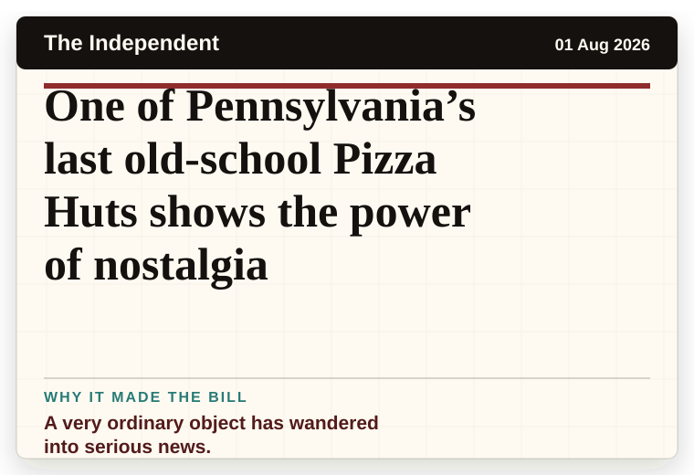
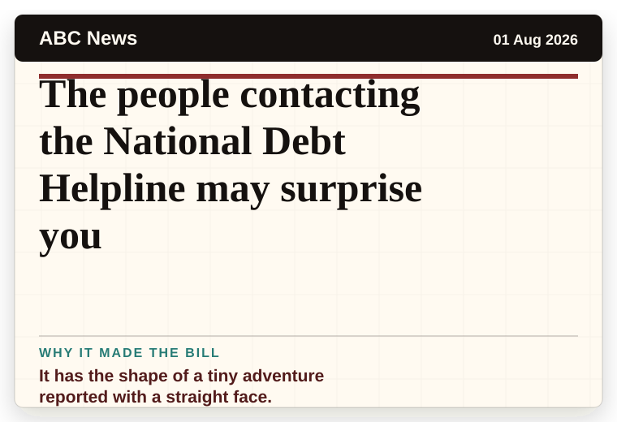

Mirror Weird News
United Kingdom
Rules if you bin letters sent to your house addressed to former owner
A household object has somehow reached the news desk.
The latest daily picks, linked back to the original sources. Search the room, pick a source, or follow a headline out to the full story.
Record updated: 01 Aug 2026, 07:53 AM AEST
Showing 14 headline candidates from the refresh run completed on 01 Aug 2026, 07:53 AM AEST.
A household object has somehow reached the news desk.

A very ordinary object has wandered into serious news.

A very ordinary object has wandered into serious news.

A wonderfully specific detail has taken centre stage.

A wonderfully specific detail has taken centre stage.

A wonderfully specific detail has taken centre stage.

A mystery is doing a lot of work in a very small sentence.

A mystery is doing a lot of work in a very small sentence.

The headline is already trying not to laugh.

A very ordinary object has wandered into serious news.

The word chaos gives it open-mic energy.

It has the shape of a tiny adventure reported with a straight face.

It reads like the setup to a very dry question.

It reads like the setup to a very dry question.